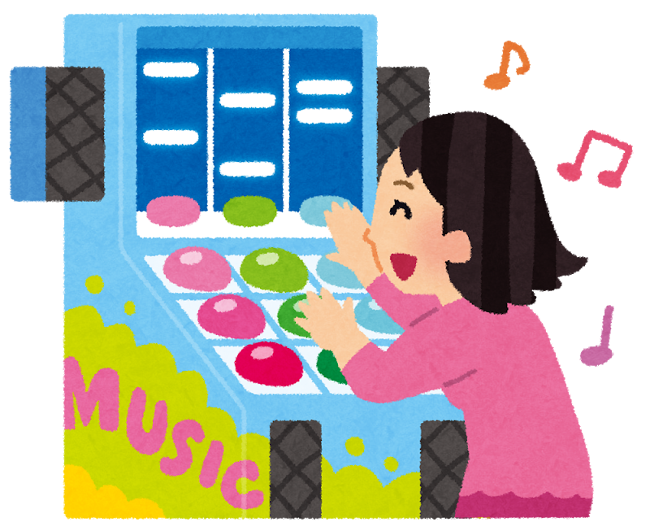

このWebサイトは音楽ゲーム（以下音ゲーと呼ぶ）が何なのかわからない方にもわかるように音ゲーを紹介する目的で制作しました。個人的な意見がとても多いと思いますが、少しでも音ゲーのことを理解していただけると幸いです。
音楽ゲームの略称であり、音楽に合わせてボタンを押すことでタイミングに応じた点数が加算され、より良いタイミングで押すことで高い点数を取ることを目的にしたゲームの総称です。リズムゲームと音楽ゲームの違いについてよく議論されるのですが、発売されているゲームのジャンルの傾向から、流れている曲に対してリズムをとるゲームを音ゲーと言い、リズムアクションゲームのように曲ではないものがメインでそこにリズムが追加されているゲームをリズムゲームと言うように個人的に理解しています。このサイトでは前者を取り扱うので「音ゲー」として呼ぶことにします。
ほとんどの音ゲーには判定ラインやそれに準ずるオブジェクトがあり、そこに音符（以下ノーツと呼ぶ）が重なったタイミングで叩くなどの特定のアクションを行うとその都度機械が判定し、点数が加算されます。
判定の段階や判定の厳しさはゲームによって異なりますが、大抵一番上の評価のみや、その次点までで抑えると特別な評価をされます。例えば、太鼓の達人ですべて「良」をとると「ドンダフルコンボ」になり、「良」と「可」で抑えると「フルコンボ」をもらえるなどです。
私が思う音ゲーの魅力はズバリ達成感です。どうしてもクリア出来ない曲をクリアできた時の達成感は何物にも代えがたい喜びがあります。また、深くはまった理由としては友達とのスコア対決やわかりやすい指標（レーティングシステムや段位認定）があることも理由として考えられると思っています。

レーティングはゲーム内の高難度曲の達成率によって増減する、プレイヤー個々に設定されている数字です。この数字が高いほどそのプレイヤーは上手であると判断することが出来ます。段位は100円で3曲または4曲の単位のコースが設定されており、条件を満たしながら通してクリアすることで、それに見合った段位が認定されます。こちらも高段位ほど上手だと判断される数字ですが、レーティングはプレイヤーがより高難易度曲をプレーしてもらうためのもので、段位はより高段位を取るために練習する人が増えることからプレイヤーのモチベーション維持のために使われているように私は思っています。
次のページからは具体的にどのようなゲームで、どのような魅力があるのかについて説明します。次のページ⇒
TOPへ戻る